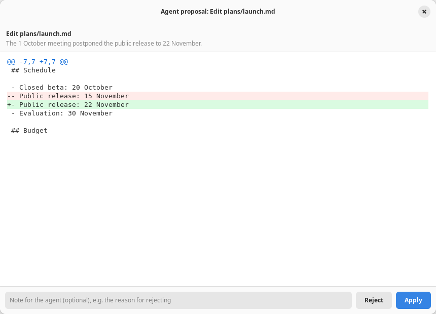
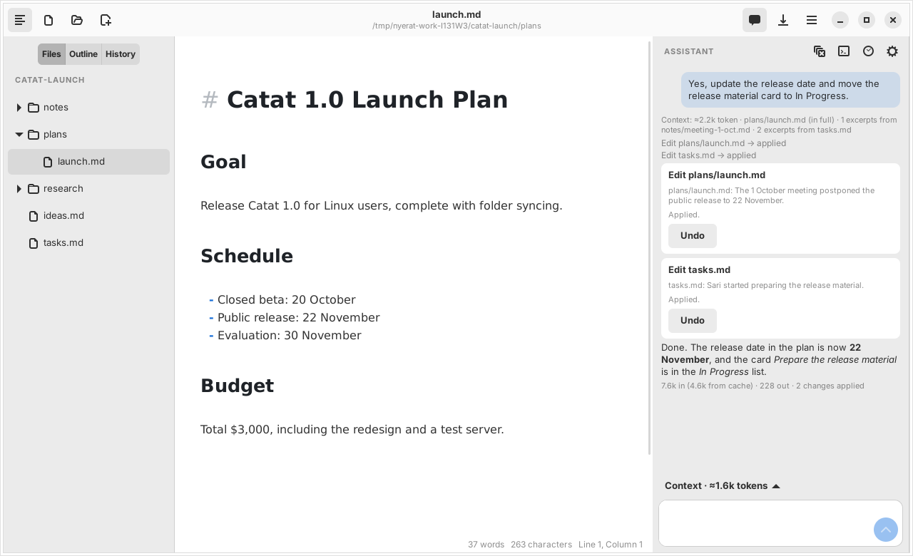
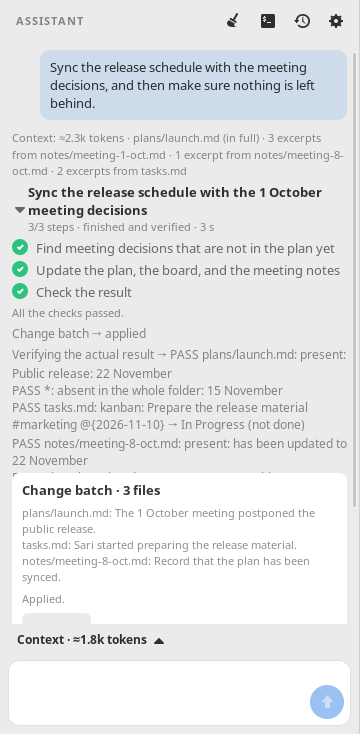
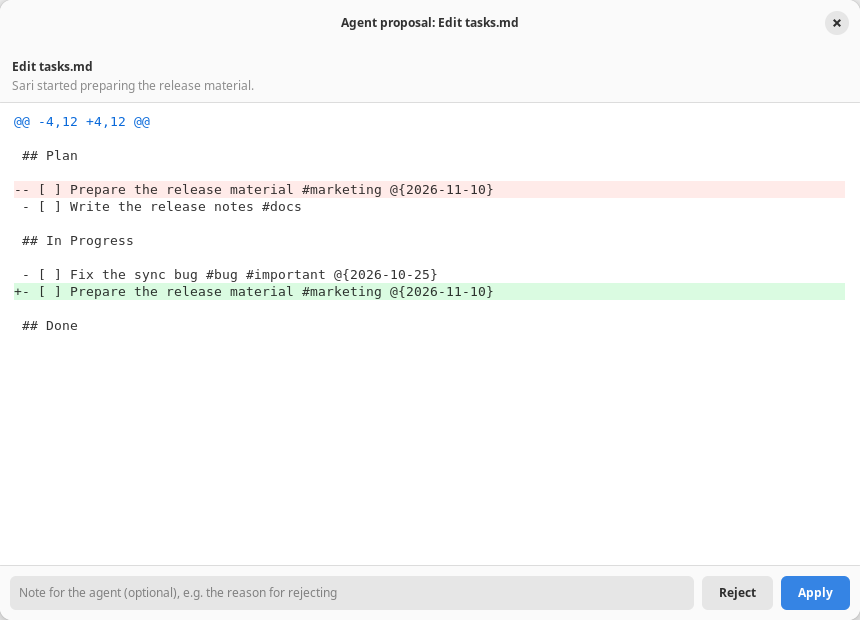

In two days, the Nyerat assistant grew from a chat panel with 4 read tools into an agent with 16 tools. It can now plan work, propose batches of changes, check the result, and pick the work back up after an interruption. One principle has been held since the first commit: the agent may read freely, but every file change must be approved by the user first. The last chapter shows the next step: Nyerat assigns kanban cards to another agent (pi) that works in a separate project folder, while Nyerat only holds the board. This page explains how that principle is kept at every stage. It covers data structures, the loop flow, safety limits, costs, and small simulations you can try yourself.
src/agent/Change + preflight; the external harness only in another project folder (Chapter 9)Each bar is one commit that changed the agent. The colors tell three kinds of tools apart: read (browsing files and Git history), proposal (producing changes that wait for approval), and control (the plan and verification, which do not touch files). Hover over a bar to see the number of tests and lines of code at that point.
.nyerat/chats and can be resumed.search_manuscript → search_documents; the tool descriptions are neutralized.create_file, edit_file), which only produce proposals and wait for Apply/Reject.edit_kanban and multi-hunk diffs.set_work), batches (propose_batch), verification, the action journal, retry, and the history summary.@pi cards are worked on by pi in another project folder, a queue per folder, the pi log, cards move to In Progress/Review.[[note]] on a card becomes pi prompt context: the note contents from the work folder are copied into the prompt, limited per note and in total.set_work plan is shown as a checklist (WorkList): progress, a spinner on the step being worked on, turn duration; tidied to GNOME idioms in 4a35bc8 (Adw.Spinner, accessible labels).runGit ends a run whose result the runtime lost, or a git that hangs, as a failure the model can read.agent/chatcontroller.ts; the panel only draws through ChatView. The workspace files now come from WorkspaceRepository (e4e3d91), with an explicit freshness per read.ui/proposalcard.ts). Earlier commits split ChatSession.ask into a TurnRun with one method per tool (76acf0d), and planChange/planKanban into handlers per tool and action (1caf08a); every function is now at most complexity 15.The agent's capabilities quadrupled, but its basic shape stayed the same. Every new feature has to satisfy these four rules. That is why each chapter below can also be read as a way of satisfying them.
The agent logic in src/agent/ does not import GTK. Tools work on a SourceFile[], return values, and do not throw. That is why everything can be tested without a window and without a network.
Tools that change things only produce a Change { before, after }. The window is what writes to disk, and that happens after the user presses Apply and the file contents are checked again.
The user can see the context that was sent together with its token count, the browsing steps, the diff, the journal, and now the Agent log too. No decision is hidden.
Every resource has a limit: context tokens, model rounds, the read budget, the size of tool results, the number of actions per batch, and paths inside the work folder.
The direction of calls is never reversed. agent/ knows nothing about the editor or widgets. The window only gives it a way to read files (ChatHost) and a way to ask for the user's decision (onProposal, onBatchProposal). Since 2dbf902 the turn itself (sending, stopping, refusing proposals after a folder change, saving, undo) is run by ChatController, and the panel only draws what ChatView tells it, so these paths are tested without a window.
src/agent/context.tsThe problem. The model cannot see the editor. If the work folder holds hundreds of KB of notes, it is impossible to send everything, and sending too much is also expensive and slow. So the quality of the answers is largely determined by a single function: buildContext().
The design. The context is split into two parts with different properties, and then ordered so that the part that rarely changes comes first:
HISTORY_SHARE).@mentioned, and relevant excerpts from other files. This part is attached only in front of the latest question.DEFAULT_BUDGET = 48_000 // tokens
estimateTokens = s => ceil(s.length / 3)
// deliberately wasteful for Indonesian text
// order: selection → active document → @mention
// → project map → BM25 excerptssplitChunks(file, text) // per heading,
// sections >1,800 characters are split at blank lines
rankChunks(chunks, query) // BM25, k1 = 1.5, b = 0.75
// headings count twice
buildQuery: question ×1, selection ×0.5,
last 2 questions ×0.4Earlier questions also go into the query with a small weight. That way, a follow-up question such as "then who handles it?" still finds the right excerpts. Suffixes are stripped roughly (the Indonesian -nya, -kan, -an, …) so that "rapatnya" matches "rapat".
note? Interactive · real computationThis is a mock work folder with meeting notes, plans, research, and a task board. The heading splitter, tokenizer, and BM25 below are copies of the context.ts logic. Change the question or the budget to see which excerpts get selected. Excerpts that do not fit in the budget are not sent. The model can still read them later with a tool.
The budget is counted with the same estimate (3 characters ≈ 1 token). In Nyerat, excerpts compete with the selection, the active document, and the project map within a 48,000-token budget. Here the budget is deliberately small so that the effect is visible.
Providers such as DeepSeek keep a cache for a message prefix that is exactly the same as in the previous request. A single different character at the start is enough to break the cache for the whole message after it. That is why the cursor position and the selection (which change with every question) must not be placed in system.
Compare two arrangements. Left: the cursor position is slipped into system. Right: Nyerat's arrangement, with every part that changes going into the note at the end. A bar shows the input tokens per question. Blue marks tokens that can be served from the cache.
This model assumes the manuscript does not change, the note is ±2,500 tokens, and each turn adds ±600 tokens of history. In the left arrangement, the cursor position is written right after the instructions (±1,500 tokens), so only the instructions stay the same as in the previous request. This is not a DeepSeek measurement. The real numbers per round (input tokens, from cache, output) can be seen in the Agent log. When the manuscript changes, the active document in system changes too and the cache really does have to be rebuilt.
src/agent/session.ts, tools.tsA turn starts by calling the model. If the model asks for a tool, that tool is run, the result is sent back, and then the model is called again. The loop stops when the model gives an answer. The first version had only 4 read tools: list_files, search_manuscript (BM25), search_text (exact text), and read_file.
for (round = 0; round < MAX_ROUNDS; round++) { // 10
useTools = round < MAX_ROUNDS - 1
result = await provider.chat({ messages,
tools: useTools ? TOOLS : undefined })
if (!result.toolCalls.length) break // the answer
for (call of result.toolCalls) {
out = runTool(call.name, call.arguments, files)
if (cost(out) > toolBudget) out = 'Budget exhausted…'
messages.push({ role: 'tool', content: out })
}
}TOOL_SHARE). If it is exceeded, the model is asked to answer with the information it already has and to say what has not been checked.MAX_RESULT_TOKENS). A longer result is cut off with a hint to read a specific range.There are several small decisions that matter. Tools never throw: broken JSON arguments become an error message the model can read, so the model can fix it by itself. The result of read_file is given the same line numbers as the context, so "file:line" references are consistent. Tools are only offered if the user allows other files to be read (the project context switch). In addition, unsaved editor contents replace the version on disk.
The user's request: "The launch meeting moved from Wednesday to Thursday, October 9; update all the documents." This is a walkthrough of the current loop flow (Chapters 5 and 8) with a scenario that has been written in advance. A real model may choose other steps. When the batch is proposed, you are the one who decides.
chatstore.ts, transcript.ts, context.ts, tools.tsEach conversation is saved as one file in <folder>/.nyerat/chats/, with frontmatter (title, model, created) and then ## You / ## Assistant sections. The format is deliberately readable and editable by humans, not a hidden database.
Questions and answers. Starting in Chapter 5, also work (the goal, steps, verification) and actions (the journal along with before/after snapshots). The .nyerat/ folder automatically gets a .gitignore containing *, because its contents include document excerpts.
The model's thinking process, the context breakdown, the full read results, and token usage. The document context is rebuilt every turn (file contents may change), so the history stays small.
WorkspaceRepository does not read dot folders, so .nyerat/ never shows up in search_documents results. Without this rule, an old answer could be read as a "fact" from a document.Nyerat was originally designed for writing books, so its prompt and tools talked about the "manuscript". After the vision was widened into a personal workbench (notes, meetings, research, plans), the name search_manuscript was changed to search_documents and all the tool descriptions were neutralized. The model picks tools by their names and descriptions. A name that is too narrow makes the model hesitate to use the tool for meeting minutes.
src/agent/changes.ts, ui/proposalviewer.tsThe need. Users want the agent not just to say "replace line 12", but to do it, without losing control over their files. The design. A write tool writes nothing. It only validates the arguments, and then computes the result as a value:
interface Change {
kind: 'create' | 'edit' | 'delete' | 'move'
file: string // relative path in the work folder
before: string // contents at the time of the proposal
after: string // contents if applied
reason: string // the reason, shown in the review window
to?: string // move only
}TOOLS // read-only, run directly
CHANGE_TOOLS // only produce a Change
// session:
change = planChange(name, args, files)
answer = await handlers.onProposal(change)
// ↑ a Promise that waits for the review window
if (answer.applied) applyToFiles(files, change)edit_file asks for an old_text that appears exactly once. If it does not match, the model gets a message telling it to read the file first or to add surrounding lines. This approach is stronger than line numbers, because models often miscount lines. edit_kanban (deb8aa5) does not edit text directly. It uses the same board model as the kanban UI (parseBoard → operation → serializeBoard), so the result is always a valid board.
There is a gap between the moment a proposal is made and the moment the user presses Apply. During that gap the user may well edit the file. That is why, before writing, the window calls preflight(). A proposal is rejected if before is no longer the same as the actual contents, instead of overwriting the user's edit.
function preflight(c, read) {
const at = read(c.file) // null = does not exist
if (c.kind === 'create') return at === null ? null : `${c.file} already exists`
if (at === null) return `${c.file} no longer exists`
if (at !== c.before) return `${c.file} changed since it was proposed; ask for a new proposal`
if (c.kind === 'move' && read(c.to) !== null) return `${c.to} already exists`
return null
}The agent proposes the change below. Try Apply, and then Undo. After that, repeat but edit the file contents in the text box before pressing the button. preflight, changeState, and invertChange here are copies of those in changes.ts.
plans/october.md (you may edit it)edit_file proposal
set_value() was called inside the adjustment's changed signal. The value changed, but the GTK viewport did not apply it. Scrolling is now scheduled through an idle. The test checks the position of the footer in the visible area, not only the adjustment value. A test that only checks internal numbers can pass even though the display is wrong.before and after, you get the diff, validation, conflict checking, and later Undo, all from the same structure.work.ts, batch.ts, verification.tsThe symptom. For multi-step work, such as moving a schedule across three documents and a task board, the model proposed changes one by one, sometimes forgot a file, and then declared "all done". The user had to approve five separate windows without seeing the whole picture.
set_workinterface WorkState {
goal: string
status: 'running' | 'paused' | 'failed' | 'complete'
steps: { text: string; status: 'pending' | 'done' | 'blocked' }[] // 1–20
note: string
actionStart?: number // journal index when this work started
verification?: Verification // the latest check result
}One important rule: the model cannot set complete itself. That status can only be reached if verify_work passes and all the steps have the status done. Every change applied afterwards clears the verification result, so the check has to be repeated. If, in the next turn, the file contents turn out no longer to match the changes that were applied, the complete status drops back to paused.
planBatch(args, files) {
virtual = copy(files) // a trial world
for (item of actions) { // ≤ 20
c = planChange(item.tool, item.arguments, virtual)
// delete/move lock the file
merge per file: first before, last after
applyToFiles(virtual, c) // the next action
} // sees this result
}applyBatch(changes, host) {
// 1. preflight ALL first; one failure = cancel everything
// 2. write in order
// 3. if a write fails: roll back what was written,
// return the error + any rollback failures
}
// an in-process transaction, no atomic guarantee
// against power lossThe actions in a batch are planned on a virtual copy, so a second action on the same file sees the result of the first. The final results are merged into one Change per file. This decision later makes the partial approval in Chapter 8 possible.
verify_work does not ask another model for an opinion. The model states its criteria, and then code checks them against the actual contents: present / absent (exact text), kanban (a card is in a given list with a given status), and since Chapter 8 also structure. The session also adds checks of its own: every file that was changed but is not mentioned in the criteria automatically produces "Changed files not yet checked: FAILED". That way, the model cannot get through just by checking the easy files.

WorkState, two readers · commits b31556d, 4a35bc8 · ui/worklist.tsThe symptom. The plan had been stored since 6c47266, but the panel showed it as the workText() text as it was: - [x] Read the meeting decisions, exactly as sent to the model. While the agent worked, the user could not see at a glance which step was in progress, and the same plan appeared twice because the tool step line "Work plan → …" printed it as well.
// before: one text for the model and for humans
answer.work.set_text(workText(work))
// - [x] Read the meeting decisions
// - [ ] Check the plan and the task cards// after: the model still receives workText(),
// the panel draws from the same data
answer.work.update(work, running, seconds)
current = running && work.status === 'running'
? steps.findIndex(s => s.status === 'pending') : -1There is no new status. WorkList only reads the existing WorkState, so a turn that is running and a conversation reopened from .nyerat/chats look the same. The only piece of information that does not come from the model is the step in progress: the first pending step, only while the turn is running. As soon as the turn finishes, the spinner disappears and the status goes back to the saved status (paused, failed, or done and verified), so the display never claims progress that was not recorded. The "Work plan" line in the tool step list is hidden when the plan is valid; a plan rejected by parseWork still appears as an error line.
The display follows GNOME idioms (see AGENT.md, "The UI must follow GNOME standards"): symbolic icons, the @success_bg_color/@success_fg_color color pair, Adw.Spinner when libadwaita ≥ 1.6 with a Gtk.Spinner fallback, and every row has the list item role with an accessible label "text — status", so that the status is not conveyed through color alone.

WorkState to a checklist Interactive · real logicChange the status of each step and whether the turn is still running. The marker rules and the meta row are copies of the logic in WorkList.update() and stepRow(). Below it is the workText() text that the model receives for the same state.
The spinner appears only when the turn is running and the saved status is running. In Nyerat the status complete can only be reached through verification (5c); here it can be chosen directly to see how it looks.
journal.ts, recovery.ts, deepseek.tsThe symptom. The app can be closed, the connection can drop, or the user can open an old conversation tomorrow morning. Without a record, the agent might propose again a change that has already been applied, or conversely think a change that actually failed has succeeded.
interface ActionEvent {
id, question, tool, time: string
status: 'proposed' | 'applied' | 'rejected' | 'failed'
| 'interrupted' | 'read' | 'reverted'
changes: Change[] // before/after snapshots → the diff can be reopened
summary: string
}Every tool call is recorded. A proposal is recorded as proposed before the review window opens, and its status is updated after the decision. If the process dies between the two points, the journal still holds proposed. On the next turn, reconcileEvents() compares it with the actual contents:
A batch of three changes had the status proposed when the app was closed. Choose the state of each file as found when the conversation is opened again.
The journal and the work status are inserted as a message labeled "data, not instructions", together with an order not to repeat actions that have been applied or rejected. When loaded from disk, parseEvents() only accepts entries with a valid shape (a clean path, a known kind). That metadata can be edited by the user, so its contents are only restored as data and never executed.
// recovery.ts: retry only if no output has been shown yet
if (!(e instanceof TemporaryProviderError) || emitted || attempt >= 2) throw e
await wait(attempt === 0 ? 300 : 900)Temporary errors (429, 5xx, a failed connection, or a cut-off stream) are retried at most twice, but only if not a single piece of text or reasoning has been shown yet. Retrying after part of an answer has streamed in would duplicate text on the user's screen.
When the history exceeds 25% of the budget, the oldest turns are cut off in pairs. The cut-off part is replaced by an extractive excerpt (≤400 characters per turn, ≤4,000 in total), not a model-written summary. Excerpts add no new facts and need no extra API call. The full history stays on disk.
src/agent/trace.ts, ui/logviewer.tsThe need. When the agent answers strangely, the question is almost always the same: what was sent, which tools were called with which arguments, and what came back? The step cards in the panel only show a one-line summary.
class AgentTrace {
events: TraceEvent[] // ≤ 2,000, the oldest dropped
begin(kind, key, title) // status 'running'
append(kind, round, delta) // text/reasoning streaming in
finish(kind, key, status, detail) // + duration (ms)
}
TraceKind = 'turn' | 'round' | 'reasoning' | 'text'
| 'tool' | 'usage' | 'note' | 'error'Every model round records the number of messages, the tools offered, and the tokens (input / from cache / output). Every tool records its tidied JSON arguments and the exact result returned to the model. Details are cut off at 20,000 characters.
The log exists only in memory: it is not sent to the model, not written to the conversation file, and it is cleared by a New conversation.
changes.ts, batch.ts, gittools.ts, markdown/lint.tsWith the foundation of Change, preflight, the journal, and verification, new capabilities can be added without opening a shortcut. Every new tool uses the same approval path.
| Capability | Safeguard |
|---|---|
insert_text at the start, the end, or after a line | For after_line, the model must include line_text. If the number and the contents do not match, the proposal is rejected. |
edit_file with all=true | Must be stated explicitly. Without it, old_text must still be unique. |
delete_file | The file is moved to the Trash, not deleted permanently. The snapshot in the journal makes Undo possible. |
move_file | The destination must not already exist. The path is checked for symlinks with projectPath(). |
Git history (git_log, show_commit, file_at_commit) | Read-only. The pathspec is limited to Markdown files that are not hidden. A commit may only be a hash or HEAD~n. Results ≤ 6,000 tokens. |
Change per file mattersThe batch review window now has a checkbox per file. Partial approval is only safe if each Change stands on its own. That is why planBatch (Chapter 5) already merged actions per file, and why files that are deleted or moved are locked so that no other action in the same batch may touch them. When the user applies only part of a batch, the journal records two events: one applied and one rejected. The model is told that the rejected part must not be repeated without asking. The Note for the agent box is passed along with the decision (≤2,000 characters), so a rejection can come with a reason.
invertChange(c): create → delete delete → create (from the before snapshot)
edit → edit with before/after swapped
move → move from c.to back to c.file
// applied as a reversed batch: [...changes].reverse().map(invertChange)Because the inverse is also a Change, Undo automatically fails safely if the file has been edited again. You already tried it in Simulation 4. The journal marks it reverted so that the agent does not think the change is still in effect.
The structure check (markdown/lint.ts) looks for tables whose cell counts do not match, unclosed code blocks, empty headings or ones that skip a level, and links to Markdown files that do not exist. Real documents often already have such problems, so the check is compared with the contents before the work (the baseline, taken from the before of the first change per file). Every problem has a key without a line number, so an old problem that only shifted lines is not counted as new. Only problems that appear because of the agent's change make it fail. The criterion file: "*" checks the whole folder, for example to make sure an old date remains nowhere.

The agent loop waits for every tool call before the next round. A read tool that never returns does not fail; it freezes the whole turn, with the spinner still turning. That is what an occasional timeout of the test agentGit in a real repository turned out to be. The log of a failing run showed:
Gjs-CRITICAL: Attempting to run a JS callback during garbage collection … it has been blocked.
The offending callback was AsyncReadyCallback().runGit() (git.ts) starts git with Gio.Subprocess and waits for communicate_utf8_async(). Git had exited (GLib had already reaped it) and timers still ran, but GJS 1.80 blocked the completion callback because it arrived during a garbage collection, so the Promise behind git_log never settled. This is the same runtime guard described in bench/GC-DIAGNOSIS.md; it is rare (about a third of the test runs with every CPU core busy, and now and then without load) and cannot be fixed from the app.
runGit(cwd, args): start git, wait for communicate_utf8_async()
watchdog every 500 ms:
git has exited and no result after 5 s → failure "git finished but its result was lost; try again"
git still running after 120 s → stop git, failure "git did not finish within 120 seconds"
the first of (callback, watchdog) settles the run; the other is ignoredBoth endings are ordinary failures: formatGit() turns them into a message the model reads, and it can call the tool again. The run is not repeated automatically, because the same runGit() also commits for the History tab, and a commit whose result was lost may already have happened. The second limit covers a git that waits for input that will never come, such as a signing passphrase. The test replaces Gio.Subprocess.prototype.communicate_utf8_async with a function that never calls back, exactly what the runtime does, and also runs a git alias that sleeps longer than the limit; with the watchdog disabled, the test times out.
agent/harness.ts, orchestrator.tsThe need. Project code (for example ~/web-ecommerce) does not live in Nyerat's work folder, and the work needs an agent that can run commands, edit code, and run tests. That is not a job for the Nyerat agent, which deliberately never writes by itself. The answer: let another agent (pi) do the work, and make the Nyerat kanban board the control plane. The card states the task, @pi states who does it, and the list states its status.
## Plan
- [ ] Checkout with QRIS @pi #feature
Use the official SDK.
- [ ] Test the cart @pi #project/shop-admin
// board frontmatter: project: web-ecommerce
// settings.json: projects = {
// "web-ecommerce": "/home/eka/web-ecommerce",
// "shop-admin": "/home/eka/shop-admin" }interface Run {
board, card // board + card text (the identifier)
agent: 'pi'
project, folder // name → folder from the settings
prompt
status: 'queued' | 'working' | 'done'
| 'failed' | 'stopped'
trace: AgentTrace // the pi log
result: HarnessResult | null
}Up to Chapter 8, every write went through Change and the review window. An external harness cannot be treated like that: pi writes directly, runs bash, and uses its own permission rules. So the boundary is no longer per change, but per folder:
| Risk | Safeguard |
|---|---|
| A card, a note, or the Nyerat agent points the harness at an arbitrary folder | Markdown only mentions the project name. The name is mapped to a folder in settings.projects, which is only filled in by the user through the folder chooser dialog. |
| The harness writes into Nyerat's work folder without a review window | checkProjectFolder() rejects the work folder, its contents, its parents, the root, and relative paths. |
| Two harnesses overwrite one repo | RunQueue: one working run per folder, the rest queued in order. |
| The harness waits for input and nobody knows | A permission/input request becomes a ⏸ waiting status on the card and is answered from Nyerat (9d). After a turn finishes without a question, stdin is closed so that pi exits. |
| A grandchild process holds the pipe, the run never finishes | After the process exits, the remaining output gets a 1.5-second grace period and is then abandoned. Stop = SIGTERM, then SIGKILL after 5 seconds. Closing the window stops all runs. |
| Changes come in without being reviewed | The prompt asks pi not to commit/push. The card stops at Review, and the diff is reviewed in the project repo. |
pi is not called as a model tool. It is a separate process with a clear contract: arguments in, JSONL out, an exit code at the end. PiReader reads the events tool_execution_start/end, message_update, message_end (with stopReason and usage.cost), and agent_settled, and maps them to the same AgentTrace as in Chapter 7. The Agent log window is reused without any change. Lines that are not JSON are recorded as they are and do not make the reading fail.
One GJS trap: the pipe from Gio.Subprocess.get_stdout_pipe() is wrapped as a Gio.UnixInputStream after Gtk is loaded, and GJS prints a Gjs-WARNING. That is why the pipe is read through GLib.IOChannel, split only at LF according to pi's JSONL framing.
The board has no card ids, so a card is recognized by its text. Every time the status changes, locateCard() looks for it on the current board (the user may have moved it) and refuses if it is missing or not unique. A board that is open is changed through its editor (one undo step); a closed one is written straight to disk.
Assign several cards to two projects, and then finish, fail, or cancel their runs. What runs is a copy of RunQueue.add() and end() from agent/harness.ts.
The symptom. The first version used pi --mode json with stdin closed right away. If pi asked ("Do you want SDK A or B?"), the card still went into Review and the question was simply left behind in the note. If a pi extension asked for permission (for example before rm -rf), the dialog had no recipient: the permission-gate shipped with pi's examples actually blocks the command when there is no UI.
The design. pi is started with --mode rpc. Its process stays alive for the run, receives commands through stdin, and sends the same events as the JSON mode, plus two new things:
// stdout → Nyerat
{"type":"extension_ui_request","id":"u1",
"method":"confirm","title":"Allow the bash command?",
"message":"rm -rf build"}
{"type":"agent_settled"} // the turn is finished
// Nyerat → stdin
{"type":"extension_ui_response","id":"u1","confirmed":true}
{"id":"nyerat-2","type":"prompt","message":"Use SDK A"}
{"id":"nyerat-steer","type":"steer","message":"…"}PiSignal = { type: 'ask', ask: HarnessAsk }
| { type: 'settled' }
| { type: 'rejected', error }
HarnessAsk {
kind: 'select' | 'confirm' | 'input'
| 'editor' | 'question'
id // null for a question
title, message, options, prefill
timeout // pi answers by itself after it
}There are two kinds of "waiting" with different answer channels. An extension dialog has an id and is answered with extension_ui_response. A model question has no special protocol: pi just stops with some text. Nyerat treats it as a question if the last answer ends with ?, and the reply is sent as the next prompt to the same process. The reader discards the old turn state through restart() so that an error or answer from before is not carried over. This heuristic can miss, so every finished run can still be replied to through Reply to pi…, which runs pi again with --session <id> and the same log.
Write pi's last answer. A copy of endsWithQuestion() decides whether the card waits for your reply or stdin is closed so that the card goes into Review.
| Limit | Reason |
|---|---|
| A waiting run still holds its folder's queue | Its process is still alive and can continue the work as soon as it is answered; another harness in the same folder could collide with it. |
| Later closes the dialog without answering | Answering is a decision. Closing a dialog must not be read as "allow" or "deny". |
An extension's timeout is followed | pi uses its default answer after the time limit. The status on the card goes back to working too, so that it does not show a request that has gone stale. |
| One command = one JSON line, bytes with an explicit length | pi's RPC framing is split on LF. write_chars() with a string and length -1 in GJS triggers GLib-WARNING: Invalid UTF-8, and the steering that is sent is corrupted. |
ls, permission was given from a script, and then pi created the file and the card went into Review (8,699 tokens, ±$0.0037). That is a single run, not an evaluation. Your own pi does not have a permission extension yet, so without installing one only questions will appear. The custom() dialog (TUI only) is not supported by RPC mode, and there is no interactive terminal yet.The need. Design decisions, specifications, and meeting minutes live in Nyerat's work folder, while pi works in the project repo. The boundary in 9a deliberately makes pi unable to read the work folder. As a result, the card "Checkout with QRIS" only carries a single title line. Users had to copy the specification into the card note by hand, and that copy went stale quickly.
The design. A card links notes with the syntax already used in the editor, [[Specification#Payment]]. On Work on it with pi, Nyerat resolves the link and copies its contents into the prompt. Pi still gets no path to the work folder, and the boundary in 9a does not change.
// pure: agent/harness.ts + markdown/wikilink.ts
cardWikiLinks(card) // title + note, ≤ 10,
// no duplicates, code skipped
LinkedNote {
link: WikiLink // target, heading, alias
file: string | null // null = not found
text: string | null // null = #section is missing
}
buildPrompt(card, project, board, notes)// host (window.ts), same rules as Ctrl+click
linkedNotes(boardFile, links):
root = work folder (or the board's folder)
files = workspace.names(root) // no dot folders,
// no symlinks
file = resolveWikiLink(target, files, board)
text = open editor ?? disk
text = heading ? noteSection(text, heading) : text| Risk | Safeguard |
|---|---|
| A link is used to read files outside the work folder | The target is only matched against the workspace.names() list: Markdown files in the work folder, without dot folders and without following symlinks. No path from Markdown is opened directly. |
| A long note inflates the prompt and pi's cost | At most 10 links, 8,000 characters per note, and 24,000 in total. Whatever is cut is marked with the number of characters dropped. #section copies only a single section. |
A note's contents hold ``` and "escape" the block, being read as instructions | The block fence is made one backtick longer than the longest run of backticks in the contents. The prompt states that the contents are context, not commands. |
| The user does not know what was sent | The full prompt, including the note contents, is recorded in the pi log. A link that is not found is mentioned as it is, not silently dropped. |
Change the card or the contents of the "Specification" note. What runs is a copy of wikiLinksIn(), noteSection(), and linkedNotesSection(). The sample work folder holds specs/Specification.md and Meeting Notes.md. The limit in the simulation is reduced to 300 characters per note so that the truncation is visible.
#Color section but not the other sections, that a missing note is still mentioned, and that clicking a link on the card does not also open the edit dialog. It has not been run with a real pi. It has not been measured whether the model uses that context better than a manual copy. The contents are taken when the run starts. Reply to pi does not copy them again, so a note changed midway is not sent.The GUI tests run a shell script that pretends to be pi, through the same process path. These tests check the cwd and the prompt, a card moving to In Progress and then Review with a note, a queue that is truly in order (the script records start/end), Stop on a process stuck for 30 seconds, a failure with a message from stderr, a project folder that is asked for once and then remembered, and a closed board that is updated on disk. For RPC mode, the fake script reads get_state and prompt from stdin, sends a permission request or a question, and then records the answer it received. The tests check the exact answer that arrives ({"type":"extension_ui_response","id":"ui-1","confirmed":true}), Later still waiting, End without replying, steering that arrives as steer, and a reply that runs with --session test-session in the same log. The unit tests cover @name assignment (not an email or @{date}), the project, folder rejection, the prompt, PiReader, the result note, and the queue. There are 23 tests, all without a real pi or API.
@name adds ±0.35 ms per 500 cards in cardMeta() (±0.7 µs per card). Not there yet: the waiting status when the harness asks for permission, an interactive terminal, a worktree per card (cards in the same project queue up), and a diff view of the harness result in Nyerat. The run status only exists while the app is open; what persists is the card position and the ↳ note.agent/commitmessage.ts, ui/messagewriter.tsThe need. The History tab can commit several files at once, but the message is still typed by hand, and a writer's commits easily turn into "update plan.md". The model can see what changed, so it can suggest a better line. This needs no conversation, no tools, and no proposal. It is one request whose answer goes into a box the user already reviews.
Only the diffs of the checked files against HEAD (workingDiff) and the subjects of the last 10 commits (recentSubjects), so the message follows their language and style. No tools are offered, and Deep thinking is off: the answer is one line, so speed matters more than reasoning.
Into the commit message box, streamed and cleaned with cleanMessage() (first line, no code fence, label, quotes, or trailing period). The box is selected afterwards, and Ctrl+Z restores the previous text. The commit itself still needs the Commit button.
// agent/commitmessage.ts: no GTK; git and the key come in as CommitSources
writeCommitMessage(sources, files, onText, cancellable)
key = sources.keyStore.get() → none: { ok: false, reason: 'no-key' }
diffs = files.map(sources.diff) → one unreadable diff is named, not fatal
fit = fitDiffs(diffs, 30_000 chars) → small diffs whole, the largest cut to whole lines
chat({ messages: commitPrompt(fit, subjects), thinking: false, onText })
return { ok: true, message: cleanMessage(answer), shortened, cancelled }The budget. A diff can be as long as a book. fitDiffs() shares a fixed budget out fairly: going from the smallest diff up, each gets at most an equal share of what is left, so small diffs are sent whole and only the largest ones are cut. The cut ends on a whole line and says how many lines were left out, and the prompt tells the model that some diffs were shortened. The status line under the box tells the user the same thing.
Three checked files with diffs of different sizes. What runs is a copy of fitDiffs(). The dark part of each bar is sent; the light part is cut.
The boundary. The button reads only what the user is about to commit, which is the same set the user already chose with the checkboxes. While it writes, MessageWriter locks the box, the checkboxes, and Commit, so the files and the message cannot change under it. The button becomes Stop, and Stop keeps the text written so far. A missing key, a network error, or an empty answer puts the previous text back and says why in the status line. Without a key, the status line links to the Assistant settings. The window gives the button its writer (connectWriter) using the Assistant's key store, provider, and model, so tests swap in a fake writer without touching the network.
One GTK detail. Gtk.Entry.set_text() is not recorded in the entry's undo history, so GTK's own Ctrl+Z cannot step back to the user's draft. MessageWriter keeps that one step itself: a capture-phase key handler restores the previous text while the box still holds exactly the written message, and forgets it as soon as the user edits.
bench/AGENTIC.md · npm run bench:agenticSnapshots, verification, and the journal are not free. The following measurements run locally without calling a model: 10 repetitions after 3 warm-ups, a batch of 20 files, at sizes of 30,000 and 480,000 characters per file. The fixture replaces the entire contents of a file, so it is deliberately heavier than ordinary work.
| Operation (20 files) | 30,000 chars: median | p95 | 480,000 chars: median | p95 |
|---|---|---|---|---|
| Plan the batch | 8.98 ms | 12.00 ms | 113.94 ms | 122.10 ms |
| Verify the result | 0.25 ms | 0.33 ms | 3.43 ms | 4.73 ms |
| Checkpoint without the journal | 3.52 ms | 4.51 ms | 3.46 ms | 4.61 ms |
| Checkpoint with the journal | 19.46 ms | 31.58 ms | 188.56 ms | 212.64 ms |
| Structure verification (with a baseline) | 10.11 ms | 10.81 ms | 157.35 ms | 160.57 ms |
The first version of the structure check walked every document three times (frontmatter/code, tables, links) and trimmed whitespace on every line. The "*" check split all files into lines even if the text being looked for was not in that file. Now the three are merged into a single pass with a character filter before the regex, and "*" only splits files that actually contain the text (file.text.includes() first).
verify_work call, not while typing. Journal snapshots can make the conversation file large. This benchmark does not measure API latency, how accurately the model picks criteria, or how long the user takes to review a diff. An evaluation of a real model is available through npm run test:live -- --agentic (it uses API quota) and has not been run in this measurement session. The editor benchmark (bench:compare) shows no repeated regression.| Pattern | Structure | In Nyerat |
|---|---|---|
| Context split by how often it changes | stable system + changing note | buildContext, buildMessages |
| A loop with hard limits | MAX_ROUNDS, toolBudget, the last round without tools | ChatSession.ask |
| Pure tools that do not throw | (args, SourceFile[]) → { content, summary } | runTool, formatGit |
| Changes as data | Change { before, after } | planChange, onProposal |
| Re-check right before writing | preflight(c, read) | applyBatch, Undo |
| Plan on a virtual copy | a copy of SourceFile[] + locks | planBatch |
| Done = passes the checks | WorkState.status + Verification | verifyWork, structureCheck |
| One state, two readers | stored data → text for the model, a widget for humans | workText, WorkList |
| Record the intent before acting | ActionEvent, three-outcome reconciliation | reconcileEvents |
| Observability separate from context | a bounded in-memory log | AgentTrace |
| Delegation through a process contract | arguments → JSONL → exit code, mapped to the same log | PiReader, spawnHarness |
| Names, not paths, for dangerous places | a name in the data, the mapping only from the user | settings.projects, checkProjectFolder |
| A return channel for the delegated agent | requests with an id are answered exactly; text questions are guessed + a way out | HarnessAsk, answer, resume |
| Context sent as contents, not access | links in the data are resolved by the host, the contents copied with limits | linkedNotes, linkedNotesSection |
| One writer per resource | a queue per key (folder) | RunQueue |
| The smallest call that does the job | one request without tools, a hard input budget, the answer only fills a field the user reviews | writeCommitMessage, fitDiffs, MessageWriter |
| Every wait has its own end | a watchdog that does not depend on the awaited callback; the first to finish wins | runGit, gitLimits |
CHANGE_TOOLS and only produce a Change.
2) What is its limit? Decide the path, the result size, the count, and what happens when the limit is exceeded.
3) What does the user see before approving, and how can it be undone?
4) How is the result verified, and how does this capability recover after an interruption?
5) Write tests with a fake Provider, measure the cost with bench:agentic, and then update this page.
Sources: README.md (the "How the assistant works" section), AGENTIC.md, src/agent/, and the git commit history from f6a4cc7 to 90c28bb, plus the harness orchestrator (Chapter 9). See also learning performance from the Nyerat editor.